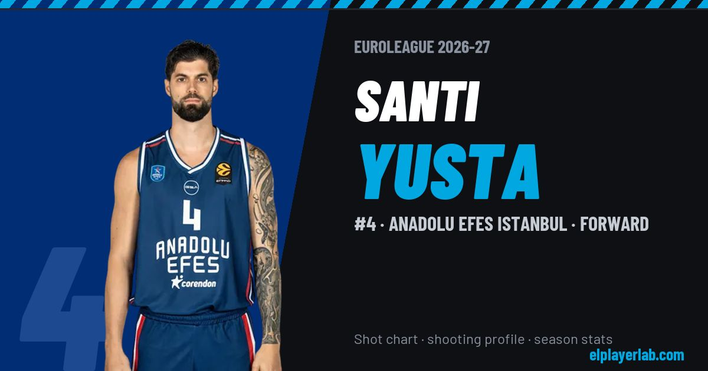

Anadolu Efes Istanbul · Euroleague 2026-27
Santi Yusta
#4 · Forward · Anadolu Efes Istanbul · 2026-27 · 2 games · 3.5 pts · 1.0 reb · 0.5 ast a game

- Number
- 4
- Position
- Forward
- Height
- 200 cm
- Weight
- 87 kg
- Born
- 1997-04-28
- Country
- Spain
Career
- Anadolu Efes 2026-2027
- Casademont Zaragoza 2021-2026
- Canarias 2019-2021
- Real Madrid 2017-2019
- Obradoiro 2015-2017
- Real Madrid 2015
- | draft_year = (NCAA)
Euroleague Player Lab: shot charts, shooting profiles and season stats for every player, rebuilt after every game.